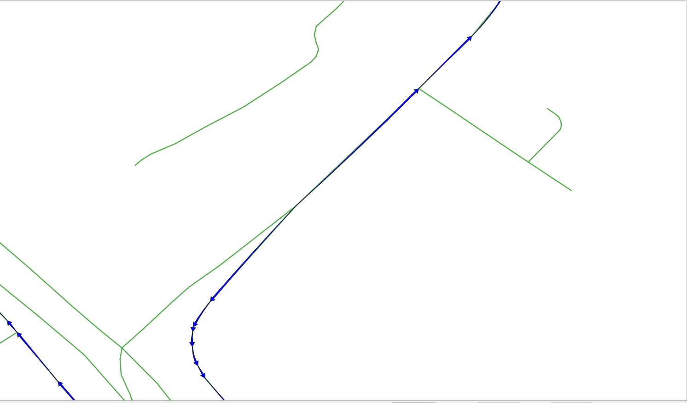

5. SQL-funktion¶

pgRouting-funktioner ger ett gränssnitt på ”låg nivå”.
När du utvecklar för en applikation på ”högre nivå” måste kraven representeras i SQL-frågorna. Eftersom dessa SQL-frågor blir mer komplexa är det önskvärt att lagra dem i postgreSQL-lagrade procedurer eller funktioner. Lagrade procedurer eller funktioner är ett effektivt sätt att linda in applikationslogik, i det här fallet relaterat till routinglogik och krav.
5.1. The function requirements¶
The function will wrap pgr_dijkstra.
The function needs to work on any of the networks designed:
vehicle_nettaxi_net
The function needs to return the following routing information:
seq- En unik identifierare av radernaid- Segmentets identifierarename- Segmentets namnlength- Segmentets längdseconds- Antal sekunder för att korsa segmentetazimuth- Segmentets azimutroute_geom- Routinggeometrinroute_readable- Geometrin i läsbar form för människor.
Utformning av funktionen
Den funktion som skall skapas är wrk_dijkstra med följande inparametrar och utdatakolumner:
Parametrar för inmatning
Parameter |
Typ |
Beskrivning |
|---|---|---|
|
REGCLASS |
Den tabell/vy som kommer att användas för bearbetning |
|
BIGINT |
The identifier of the departure location. |
|
BIGINT |
The identifier of the destination location. |
utmatningskolumner
Namn |
Typ |
Beskrivning |
|---|---|---|
|
HELTAL |
Ett unikt nummer för varje resultatrad. |
|
BIGINT |
Identifieraren för kanten. |
|
TEXT |
Namnet på segmentet. |
|
FLOAT |
Antal sekunder det tar att korsa segmentet. |
|
FLOAT |
Segmentets längd i meter. |
|
FLOAT |
Segmentets azimut. |
|
TEXT |
Geometrin i mänskligt läsbar form. |
|
geometri |
Segmentets geometri i rätt riktning. |
5.2. Hantering av ytterligare information¶
När programmet behöver ytterligare information, t.ex. gatunamnet, kan du ”koppla ihop” resultaten med andra tabeller.
5.2.1. Övning 1: Skaffa ytterligare information¶
Problem
Från Emily Place Reserve till Auckland University of Technology
Få följande information:
seqidnamesecondslength
Lösning
The function returns the columns asked. (line 4)
Rename
pgr_dijkstraresults to application requirements names. (line 12).LEFT JOINthe results withvehicle_netto get the additional information. (line 17)LEFTatt inkludera raden medid = -1eftersom den inte finns påvehicle_net
Test from |ch7_id_1| to |ch7_id_2| on
vehicle_net. (Last line)
1-- DROP FUNCTION wrk_dijkstra(regclass, bigint, bigint);
2
3CREATE OR REPLACE FUNCTION wrk_dijkstra(
4 IN edges_subset REGCLASS, IN source BIGINT, IN target BIGINT,
5 OUT seq INTEGER, OUT id BIGINT, OUT seconds FLOAT, OUT name TEXT, OUT length FLOAT
6)
7RETURNS SETOF record AS
8$BODY$
9SELECT
10seq, id, seconds, name, length
11FROM (
12 SELECT seq, edge AS id, node, cost AS seconds
13 FROM pgr_dijkstra(
14 'SELECT * FROM ' || $1,
15 source, target)
16) AS results
17LEFT JOIN vehicle_net USING (id)
18ORDER BY seq;
19$BODY$
20LANGUAGE SQL;
21
22SELECT * FROM wrk_dijkstra('vehicle_net', , );
CREATE FUNCTION
5.3. Geometrihantering¶
Ur pgRoutings synvinkel är geometrin en del av den ytterligare information som behövs om resultaten för en applikation. Därför JOIN resultaten med andra tabeller som innehåller geometrin och för vidare bearbetning med PostGIS-funktioner.
5.3.1. Övning 2: Geometri för rutt (läsbar för människor)¶

Problem
Rutt från Emily Place Reserve till Auckland University of Technology
Utöver den föregående övningen, skaffa
geometri
geomi mänskligt läsbar form benämndroute_readable
Lösning
The function returns
route_readable. (line 6)The routing query named
resultsin a WITH clause. (line 11)The
geomprocessed withST_AsTextto get the human readable form. (line 19).Test from |ch7_id_1| to |ch7_id_2| on
vehicle_net. (Last line)
1DROP FUNCTION wrk_dijkstra(regclass, bigint, bigint);
2
3CREATE OR REPLACE FUNCTION wrk_dijkstra(
4 IN edges_subset REGCLASS, IN source BIGINT, IN target BIGINT,
5 OUT seq INTEGER, OUT id BIGINT, OUT seconds FLOAT, OUT name TEXT, OUT length FLOAT,
6 OUT route_readable TEXT
7)
8RETURNS SETOF record AS
9$BODY$
10WITH
11results AS (
12 SELECT seq, edge AS id, node, cost AS seconds
13 FROM pgr_dijkstra(
14 'SELECT * FROM ' || $1,
15 source, target)
16)
17SELECT
18 seq, id, seconds, name, length,
19 ST_AsText(geom)
20FROM results
21LEFT JOIN vehicle_net USING (id)
22ORDER BY seq;
23$BODY$
24LANGUAGE SQL;
25
26SELECT seq, route_readable FROM wrk_dijkstra('vehicle_net', , );
DROP FUNCTION
CREATE FUNCTION
5.3.2. Övning 3: Ruttgeometri (binärt format)¶

Problem
Rutt från Emily Place Reserve till Auckland University of Technology
Utöver den föregående övningen, skaffa
geomi binärt format med namnetroute_geom
Lösning
The function returns
route_geom. (line 7)The geometry
geomof the segments (line 21)Test from |ch7_id_1| to |ch7_id_2| on
vehicle_net. (Last line)
1DROP FUNCTION wrk_dijkstra(regclass, bigint, bigint);
2
3CREATE OR REPLACE FUNCTION wrk_dijkstra(
4 IN edges_subset REGCLASS, IN source BIGINT, IN target BIGINT,
5 OUT seq INTEGER, OUT id BIGINT, OUT seconds FLOAT, OUT name TEXT, OUT length FLOAT,
6 OUT route_readable TEXT,
7 OUT route_geom geometry
8)
9RETURNS SETOF record AS
10$BODY$
11WITH
12results AS (
13 SELECT seq, edge AS id, node, cost AS seconds
14 FROM pgr_dijkstra(
15 'SELECT * FROM ' || $1,
16 source, target)
17)
18SELECT
19 seq, id, seconds, name, length,
20 ST_AsText(geom),
21 geom
22FROM results
23LEFT JOIN vehicle_net USING (id)
24ORDER BY seq;
25$BODY$
26LANGUAGE SQL;
27
28SELECT seq, route_geom FROM wrk_dijkstra('vehicle_net', , );
DROP FUNCTION
CREATE FUNCTION
5.3.3. Övning 4: Riktning för väggeometri¶
{kind=link}
Visuellt, när rutten visas med pilar, kan det konstateras att det finns pilar som inte stämmer överens med ruttens riktning.
För att riktningsverkan ska vara korrekt måste slutpunkten för en geometri motsvara startpunkten för nästa geometri
Kontrollerar detaljerna i resultatet av Övning 2: Ruttgeometri (läsbar för alla)
WITH
results AS (
SELECT seq, id, route_geom
FROM wrk_dijkstra('vehicle_net', , )
),
compare AS (
SELECT seq, id, lead(seq) over(ORDER BY seq) AS next_seq,
ST_AsText(ST_endPoint(route_geom)) AS id_end,
ST_AsText(ST_startPoint(lead(route_geom) over(ORDER BY seq))) AS next_id_start
FROM results
ORDER BY seq)
SELECT * FROM compare WHERE id_end != next_id_start;
Problem
Rutt från Emily Place Reserve till Auckland University of Technology
Fixera riktningen för geometrierna i föregående övning
geomi mänskligt läsbar form benämndroute_readablegeomi binärt format med namnetroute_geomBåda kolumnerna måste ha geometrin fixerad för riktverkan.
Lösning
För att få rätt riktning måste vissa geometrier vändas:
Reversing a geometry will depend on the
nodecolumn of the query to Dijkstra.En villkorlig
CASE-sats som returnerar geometrin i läsbar form:Of the geometry when
nodeis thesourcecolumn.Of the reversed geometry when
nodeis not thesourcecolumn.
En villkorlig
CASE-sats som returnerar:The geometry when
nodeis thesourcecolumn.The reversed geometry when
nodeis not thesourcecolumn.
1DROP FUNCTION wrk_dijkstra(regclass, bigint, bigint);
2
3CREATE OR REPLACE FUNCTION wrk_dijkstra(
4 IN edges_subset REGCLASS, IN source BIGINT, IN target BIGINT,
5 OUT seq INTEGER, OUT id BIGINT, OUT seconds FLOAT, OUT name TEXT, OUT length FLOAT,
6 OUT route_readable TEXT,
7 OUT route_geom geometry
8)
9RETURNS SETOF record AS
10$BODY$
11WITH
12results AS (
13 SELECT seq, edge AS id, node, cost AS seconds
14 FROM pgr_dijkstra(
15 'SELECT * FROM ' || $1,
16 source, target)
17)
18SELECT
19 seq, id, seconds, name, length,
20 CASE
21 WHEN node = source THEN ST_AsText(geom)
22 ELSE ST_AsText(ST_Reverse(geom))
23 END,
24
25 CASE
26 WHEN node = source THEN geom
27 ELSE ST_Reverse(geom)
28 END
29FROM results
30LEFT JOIN vehicle_net USING (id)
31ORDER BY seq;
32$BODY$
33LANGUAGE SQL;
34
35SELECT seq, route_readable FROM wrk_dijkstra('vehicle_net', , );
DROP FUNCTION
CREATE FUNCTION
Inspecting the problematic rows, the directionality has been fixed.
WITH
results AS (
SELECT seq, id, seconds, route_geom
FROM wrk_dijkstra('vehicle_net', , )
),
compare AS (
SELECT seq, id, lead(route_geom) over(ORDER BY seq) AS next_id,
ST_AsText(ST_endPoint(route_geom)) AS id_end,
ST_AsText(ST_startPoint(lead(route_geom) over(ORDER BY seq))) AS next_id_start
FROM results
ORDER BY seq)
SELECT * FROM compare WHERE id_end != next_id_start;
5.3.4. Övning 5: Använda geometrin¶

Det finns många geometriska funktioner i PostGIS, workshopen har redan behandlat några av dem som ST_AsText, ST_Reverse, ST_EndPoint, etc. Denna övning kommer att använda ytterligare en funktion ST_Azimuth.
Problem
Modifiera frågan från föregående övning
Additionally obtain the azimuth in degrees of the corrected geometry.
Lösning
The function returns
aximuth. (line 8)The query from previous exercise is wrapped under additional subquery. (line 18)
The
azimuthis processed in degrees. (line 35).Test from |ch7_id_1| to |ch7_id_2| on
vehicle_net. (Last line)
1DROP FUNCTION wrk_dijkstra(regclass, bigint, bigint);
2
3CREATE OR REPLACE FUNCTION wrk_dijkstra(
4 IN edges_subset REGCLASS, IN source BIGINT, IN target BIGINT,
5 OUT seq INTEGER, OUT id BIGINT, OUT seconds FLOAT, OUT name TEXT, OUT length FLOAT,
6 OUT route_readable TEXT,
7 OUT route_geom geometry,
8 OUT azimuth FLOAT
9)
10RETURNS SETOF record AS
11$BODY$
12WITH
13results AS (
14 SELECT seq, edge AS id, node, cost AS seconds
15 FROM pgr_dijkstra(
16 'SELECT * FROM ' || $1,
17 source, target)),
18additional AS (
19 SELECT
20 seq, id, seconds, name, length,
21 CASE
22 WHEN node = source THEN ST_AsText(geom)
23 ELSE ST_AsText(ST_Reverse(geom))
24 END AS readable,
25
26 CASE
27 WHEN node = source THEN geom
28 ELSE ST_Reverse(geom)
29 END AS geom
30 FROM results
31 LEFT JOIN vehicle_net USING (id)
32 ORDER BY seq)
33
34SELECT *,
35 degrees(ST_azimuth(ST_StartPoint(geom), ST_EndPoint(geom))) AS azimuth
36FROM additional ORDER BY seq;
37$BODY$
38LANGUAGE SQL;
39
40SELECT seq, azimuth FROM wrk_dijkstra('vehicle_net', , );
DROP FUNCTION
CREATE FUNCTION
5.3.5. Exercise 6: Using the function¶
Testa funktionen med en kombination av de intressanta platserna:
10840Auckland University of Technology936The Band Rotunda21570Four Points by Sheraton10928Sky tower12777Emily Place Reserve
Using different networks:
vehicle_nettaxi_netwalk_net
Namn på gatorna i rutten
SELECT DISTINCT name
FROM wrk_dijkstra('vehicle_net', , );
Totalt antal sekunder på varje gata
SELECT name, sum(seconds)
FROM wrk_dijkstra('taxi_net', , )
GROUP BY name;
Why it does not fully work with walk_net?
SELECT *
FROM wrk_dijkstra('walk_net', , );